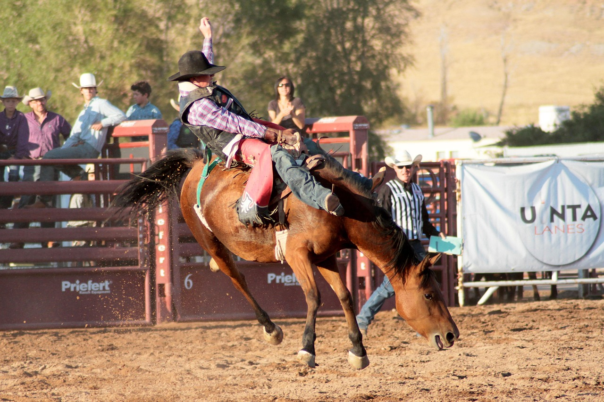
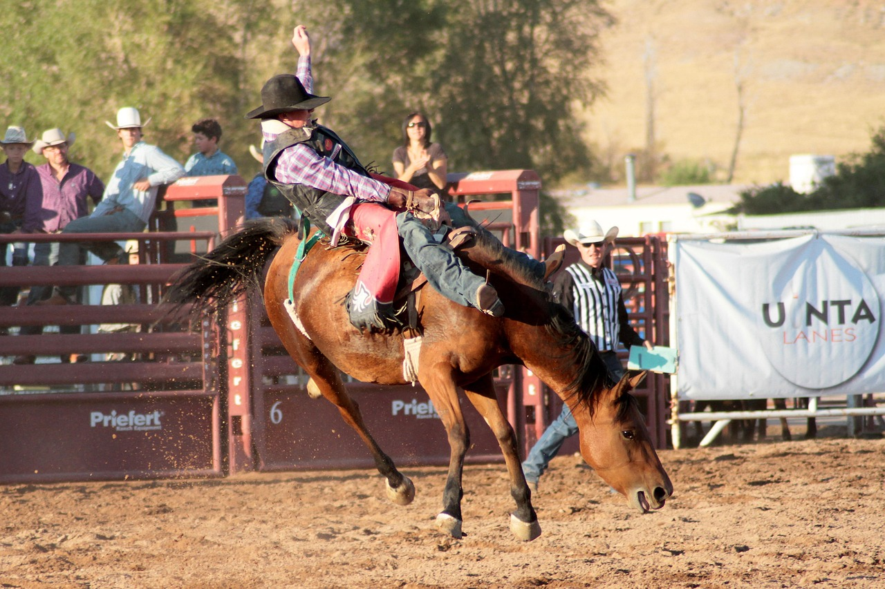

Welcome to Laramie, "Gem City of the Plains".
Laramie, Wyoming, often referred to as the "Gem City of the Plains," is a vibrant and dynamic community located in southeastern Wyoming. Known for its breathtaking landscapes, rich history, and strong educational presence, Laramie offers a unique blend of small-town charm and modern amenities. Below is a detailed overview of the city's key aspects:
Demographics and Population
As of the 2020 Census, Laramie has a population of 31,407 residents, making it the third-largest city in Wyoming. The city has a diverse demographic makeup: White: 83.8% Asian: 4.1% Two or More Races: 7.2% Hispanic or Latino: 11.7% Laramie's vibrant culture reflects its diverse community and the influence of the University of Wyoming, which brings a blend of local and international residents. Source: Census.gov
Education
Laramie is home to the University of Wyoming, the state's only four-year institution of higher education. The city is highly educated: High School Graduates: 96.7% of individuals aged 25 and older Bachelor's Degree or Higher: 55.8% of the population The presence of the university fosters a culture of innovation and learning, contributing to the city's economic and cultural vitality. Source: Census.gov
Income and Cost of Living
Median Household Income: $52,414 Cost of Municipal Government: $2,208 per capita (19% lower than Wyoming's statewide average of $2,722) Laramie offers an affordable cost of living compared to other cities in the state. With its mix of affordable housing and educational resources, it is a desirable location for families and students. Source: City of Laramie.(City of Laramie, 2023)
Housing
Median Home Value: $302,200 Homeownership Rate: 44.1% Laramie's housing market caters to a wide range of needs, from student rentals to family homes. The city's historic neighborhoods feature charming, older homes, while newer developments offer modern amenities. (City of Laramie, 2023).
Weather
Situated at an elevation of 7,165 feet, Laramie experiences a semi-arid climate with: Cold, snowy winters: Average low temperatures can dip below freezing, with significant snowfall. Mild summers: Highs average in the 70s to 80s °F. Distinct seasonal changes: Spring and fall offer cooler temperatures and occasional precipitation. The high elevation contributes to a dry atmosphere, with wide temperature fluctuations between day and night. Outdoor enthusiasts enjoy year-round activities such as hiking, skiing, and fishing.(National Weather Service, 2023)
Welcome to Wyoming—where the spirit of the West lives on.
Culture and Economy
Laramie is not only a hub for education but also a center for arts, culture, and outdoor recreation: University of Wyoming: A driving force behind Laramie's economy and culture, with annual events, sports, and research opportunities. Downtown Laramie: A vibrant area featuring local shops, restaurants, and cultural events like the Laramie Jubilee Days. Industries: Laramie's economy is supported by education, healthcare, tourism, and light manufacturing. (U.S. Census Bureau, 2020)
Transportation
Laramie is accessible via Interstate 80, with regional transportation options including Laramie Regional Airport, offering flights to major hubs. The city also has bike-friendly routes and public transit systems to serve residents and visitors. (Wyoming Department of Transportation, 2023).